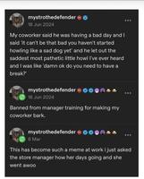
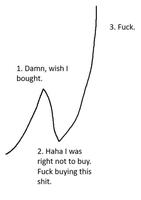

0

Microsoft has sharply raised prices across its Surface lineup as RAM and component costs keep climbing. "Both its midrange and flagship Surface lines are now significantly more expensive than they were just a few weeks ago, with the flagship Surface Laptop 7 and Surface Pro 11 now starting at $500 more than they launched at in 2024," reports Windows Central. From the report: The Surface Pro 12-inch, which was previously Microsoft's cheapest modern Surface PC at $799, now starts at $1,049. The flagship Surface Pro 13-inch, which originally launched for $999, now starts at an eyewatering $1,499. It's the same story for the Surface Laptop lines, with the entry-level 13-inch model originally priced at $899, now starting at $1,149. The 13.8-inch flagship Surface Laptop launched at $999, but now costs $1,499, with the 15-inch model now starting at $1,599. This means that Microsoft's midrange devices now cost more than the flagships did when they launched in 2024.
[...] Microsoft has raised prices for all SKUs on offer, meaning the high end models are now more expensive too. A top end Surface Laptop 15-inch with Snapdragon X Elite, 64GB RAM and 1TB SSD storage now costs a staggering $3,649. To compare, the 16-inch MacBook Pro with an M5 Pro, 64GB RAM, and 1TB SSD is $3,299, and that comes with a significantly better display and much more power under the hood.
Read more of this story at Slashdot.
A proposed California bill would require 3D printer makers to use state-certified software to detect and block files for gun parts, but advocates at the Electronic Frontier Foundation (EFF) say it would be easy to evade and could lead to widespread surveillance of users' printing activity. The Register reports: The bill in question is AB 2047, the scope of which, on paper, appears strict. The primary goal is clear and simple: to require 3D printer manufacturers to use a state-certified algorithm that checks digital design files for firearm components and blocks print jobs that would produce prohibited parts. [...] Cliff Braun and Rory Mir, who respectively work in policy and tech community engagement at the EFF, claim that the proposals in California are technically infeasible and in practice will lead to consumer surveillance.
In a series of blog posts published this month, the pair argued that print-blocking technology -- proposals for which have also surfaced in states including New York and Washington - cannot work for a range of technical reasons. They argued that because 3D printers and other types of computer numerical control (CNC) machines are fairly simple, with much of their brains coming from the computer-aided manufacturing (CAM) software -- or slicer software -- to which they are linked, the bill would establish legal and illegal software. Proprietary software will likely become the de facto option, leaving open source alternatives to rot.
"Under these proposed laws, manufacturers of consumer 3D printers must ensure their printers only work with their software, and implement firearm detection algorithms on either the printer itself or in a slicer software," wrote Braun earlier this month. "These algorithms must detect firearm files using a maintained database of existing models. Vendors of printers must then verify that printers are on the allow-list maintained by the state before they can offer them for sale. Owners of printers will be guilty of a crime if they circumvent these intrusive scanning procedures or load alternative software, which they might do because their printer manufacturer ends support."
Braun also argued that it would be trivial for anyone who uses 3D printers to make small tweaks to either the visual models of firearms parts, or the machine instructions (G-code) generated from those models, to evade detection. Mir further argued that the bill offers no guardrails to keep this "constantly expanding blacklist" limited to firearm-related designs. In his view, there is a clear risk that this approach will creep into other forms of alleged unlawful activity, such as copyright infringement. [...] Braun and Mir have a list of other arguments against the bill. They say the algorithms are more than likely to lead to false positives, which will prevent good-faith users from using their hardware. Many 3D printer owners also have no interest in printing firearm components. Most simply want the freedom to print trinkets and spare parts while others use them to print various items and sell them as an income stream.
Read more of this story at Slashdot.
alternative_right shares a report from 404 Media: An independent privacy audit of Microsoft, Meta, and Google web traffic in California found that the companies may be violating state regulations and racking up billions in fines. According to the audit from privacy search engine webXray, 55 percent of the sites it checked set ad cookies in a user's browser even if they opted out of tracking. Each company disputed or took issue with the research, with Google saying it was based on a "fundamental misunderstanding" of how its product works.
The webXray California Privacy Audit viewed web traffic on more than 7,000 popular websites in California in the month of March and found that most tech companies ignore when a user asks to opt-out of cookie tracking. California has stringent and well defined privacy legislation thanks to its California Consumer Privacy Act (CCPA) which allows users to, among other things, opt out of the sale of their personal information. There's a system called Global Privacy Control (GPC), which includes a browser extension that indicates to a website when a user wants to opt out of tracking.
According to the webXray audit, Google failed to let users opt out 87 percent of the time. "Google's failure to honor the GPC opt-out signal is easy to find in network traffic. When a browser using GPC connects to Google's servers it encodes the opt-out signal by sending the code 'sec-gpc: 1.' This means Google should not return cookies," the audit said. "However, when Google's server responds to the network request with the opt-out it explicitly responds with a command to create an advertising cookie named IDE using the 'set-cookie' command. This non-compliance is easy to spot, hiding in plain sight."
The audit said that Microsoft fails to opt out users in the same way and has a failure rate of 50 percent in the web traffic webXray viewed. Meta's failure rate was 69 percent and a bit more comprehensive. "Meta instructs publishers to install the following tracking code on their websites. The code contains no check for globally standard opt-out signals -- it loads unconditionally, fires a tracking event, and sets a cookie regardless of the consumer's privacy preferences," the audit said. It showed a copy of Meta's tracking data which contains no GPC check at all.
Read more of this story at Slashdot.
J. Allen Hynek started as an Air Force consultant brought in to help explain away early UFO reports, but over time he grew frustrated with what he saw as the government's effort to minimize unexplained cases rather than seriously investigate them. Longtime Slashdot reader schwit1 shares an article from Popular Mechanics, in collaboration with Biography.com, that argues Hynek's shift from skeptic to advocate helped shape modern ufology, and that the Air Force's attempts to control the narrative may have deepened the public distrust and conspiracy thinking that followed. From the report: Do you think the U.S. government is hiding, and possibly reverse-engineering, extraterrestrial technology? Think again. Or better yet, don't think about it at all. Nothing to see here. That's the underlying message of a report released in 2024 by the Department of Defense. The 63-page "Report on the Historical Record of U.S. Government Involvement with Unidentified Anomalous Phenomena (UAP) " concludes that the DoD's All-Domain Anomaly Resolution Office (AARO) "found no evidence that any [U.S. Government] investigation, academic-sponsored research, or official review panel has confirmed that any sighting of a UAP represented extraterrestrial technology."
The AARO, as
The Guardian summarizes, is "a government office established in 2022 to detect and, as necessary, mitigate threats including 'anomalous, unidentified space, airborne, submerged and transmedium objects.'" This report came on the heels of, and in contradiction to, what was arguably the most high-profile hearing on UAPs -- formerly known as unidentified flying objects, or UFOs -- in decades: the August 2023 testimony of "whistleblower" Dave Grusch.
[...] The 2024 AARO report stated that during the time Hynek was working with Project Blue Book [the U.S. Air Force's best-known UFO investigation program], "about 75 percent of Americans trusted the [US government] 'to do the right thing almost always or most of the time.'" But, the report noted, since 2007, that number has never risen above 30 percent. "This lack of trust probably has contributed to the belief held by some subset of the U.S. population that the USG has not been truthful regarding knowledge of extraterrestrial craft."
Ultimately, the Air Force's efforts to stifle Hynek -- pressuring him to offer the public standard responses to questions he wasn't even allowed to ask -- appears to have backfired. Ironically, the Air Force's attempts to quiet suspicions only fueled them, leading to more conspiracy theories and distrust. People came to believe that the government was hiding the truth, contrary to Hynek's actual revelation: that, in reality, the people at the top may not care much about finding the answers after all.
Read more of this story at Slashdot.
BrianFagioli shares a report from NERDS.xyz: For years pop culture has treated April 25 as the "perfect date," thanks to the famous Miss Congeniality line about needing only a light jacket. But new analysis from WeatherBug suggests that idea does not actually hold up when you look at the numbers. After reviewing U.S. weather data from 2018 through today, the company concluded that October 8 delivers the most reliable combination of comfortable temperatures and low rainfall nationwide. According to the analysis, the average conditions on that day land around 66F with just 0.0573 inches of precipitation.
The study used population weighted weather data drawn from roughly 20 million daily WeatherBug users across the United States. When the company compared all days of the year, April 25 ranked only 80th, averaging about 60F and roughly 0.1297 inches of rain. The broader dataset also shows July dominating the hottest days of the year while January owns the coldest, with January 20 averaging just 33F nationally. While no single date guarantees perfect weather everywhere in a country as large as the U.S., the numbers suggest early October may quietly offer one of the most reliable windows for comfortable outdoor conditions.
Read more of this story at Slashdot.
An anonymous reader quotes a report from TechCrunch: AI experts and the public's opinion on the technology are increasingly diverging, according to Stanford University's annual report on the AI industry, which was released Monday. In particular, the report noted a growing trend of anxiety around AI and, in the U.S., concerns about how the technology will impact key societal areas, such as jobs, medical care, and the economy. [...] Stanford's report provides more insight into where all this negativity is coming from, as it summarizes data around public sentiment of AI across various sources. For instance, it pointed to a report from Pew Research published last month, which noted that only 10% of Americans said they were more excited than concerned about the increased use of AI in daily life. Meanwhile, 56% of AI experts said they believed AI would have a positive impact on the U.S. over the next 20 years.
Expert opinion and public sentiment also greatly diverged in particular areas where AI could have a societal impact. Indeed, 84% of experts, the report authors noted, said that AI would have a largely positive impact on medical care over the next 20 years, but only 44% of the U.S. general public said the same. Plus, a majority (73%) of experts felt positive about AI's impact on how people do their jobs, compared with just 23% of the public. And 69% of experts felt that AI would have a positive impact on the economy. Given the supposed AI-fueled layoffs and disruptions to the workplace, it's not surprising that only 21% of the public felt similarly. Other data from Pew Research, cited by the report, noted that AI experts were less pessimistic on AI's impact on the job market, while nearly two-thirds of Americans (or 64%) said they think AI will lead to fewer jobs over the next 20 years.
The U.S. also reported the lowest trust in its government to regulate AI responsibly, compared with other nations, at 31%. Singapore ranked highest at 81%, per data pulled from Ipsos found in Stanford's report. Another source looked at regulation concerns on a state-by-state level and concluded that, nationwide, 41% of respondents said federal AI regulation will not go far enough, while only 27% said it would go "too far." Despite the fears and concerns, AI did get one accolade: Globally, those who feel like AI products and services offer more benefits than drawbacks slightly rose from 55% in 2024 to 59% in 2025. But at the same time, those respondents who said that AI makes them "nervous" grew from 50% to 52% during the same period, per data cited by the report's authors.
Read more of this story at Slashdot.
Sony Pictures chief Tom Rothman urged theater owners to cut down the roughly 30 minutes of trailers and ads before movies. "Get off the ad crack," Rothman told the audience at CinemaCon this week. "Get rid of the endless advertising and substantially shorten the long pre-shows." Variety reports: He noted that frequent moviegoers now show up a half hour late to avoid all the spots (something that reserved seating has made easier than ever before). Rothman said that means many people "don't even see the trailers," which results in "enticements gone to waste." Rothman predicted that the 2026 box office, which has already benefitted from hits like "Super Mario Galaxy Movie" and "Project Hail Mary," will rebound in a big way. But he acknowledged that attendance still trails pre-pandemic levels.
Rothman has been a vociferous defender of the big screen, pushing studios to embrace longer windows so that movies will stay in cinemas longer. That was a theme that Rothman returned to at CinemaCon, pressing exhibitors to hold strong and agree not to show movies that quickly appear on streaming services or on-demand platforms. "Enforce longer windows," Rothman said. "Yes, even if that means you cannot play every film."
In addition to stumping for exhibition, Rothman has practically begged Hollywood to invest in new stories along with all the franchise fare. In a recent New York Times op-ed, for instance, Rothman, the longest-serving studio chief, wrote, "For all the success of films driven by existing intellectual property, originality is essential to movies. Neither movie theaters nor the art form itself can survive without at least some originality. After all, you can't make a sequel to nothing."
Read more of this story at Slashdot.
Amazon is buying satellite communications company Globalstar for $10.8 billion to expand its Leo satellite-internet network and compete more directly with SpaceX's Starlink. The deal also includes a partnership with Apple to support satellite connectivity for iPhones and Apple Watches, with Amazon planning voice, data, and messaging services starting in 2028. The New York Times reports: Leo was Amazon's move to enter the market for beaming high-speed internet to the ground from orbit. That is an arena dominated by Elon Musk's SpaceX, which operates the Starlink satellite-internet service. Starlink, which has thousands of satellites in orbit, already serves several million customers around the world. This month, SpaceX filed to go public in what is shaping up to be one of the largest-ever initial public offerings. Mr. Musk has valued SpaceX -- which has landed contracts with federal agencies such as NASA and the Department of Defense -- at more than $1 trillion. Other companies are racing to catch up to what Mr. Musk has built for space.
Globalstar, founded in 1991, is a Louisiana-based global telecommunications company. It operates networks of low-Earth orbiting satellites to provide internet connectivity to customers. Paul Jacobs, Globalstar's chief executive, said in a statement that together, the two companies "will advance innovations in digital connectivity."
Read more of this story at Slashdot.
An anonymous reader quotes a report from Cord Cutters News: Sony has notified owners of its recent BRAVIA television models that significant changes to the built-in TV Guide for its OTA TV antenna users and related menu features will take effect starting in late May 2026. The update affects a range of premium sets released between 2023 and 2025, marking another instance of feature adjustments for older smart TV hardware as manufacturers shift focus toward newer product lines. The changes primarily target the program guide functionality for over-the-air antenna TV channels received via the ATSC tuner. After the cutoff date, program information may fail to display on certain channels, limiting the guide's usefulness for planning viewing schedules. Users will often see listings only for channels they have recently watched, rather than a comprehensive overview of available broadcasts. Additionally, channel logos that previously appeared in the guide will disappear, and any thumbnail images accompanying program descriptions will no longer load or show.
Further modifications will appear in the television's menu system. For users relying on connected set-top boxes, the dedicated Set Top Box menu option will be removed entirely. In its place, a simpler Control menu will surface, streamlining access but eliminating some specialized navigation previously available. Program thumbnails, which provided visual previews in various menu sections, will also cease to appear across affected interfaces. These adjustments stem from Sony's ongoing efforts to manage backend services and data feeds that support enhanced guide features on its Google TV-powered BRAVIA lineup. As television ecosystems evolve rapidly with advancements in processing power, artificial intelligence integration, and cloud-based content delivery, companies periodically retire select capabilities on prior-generation hardware to optimize resources. The 2023 through 2025 models, while still offering excellent picture quality through advanced OLED and LCD panels with features like XR processing, now fall into the category of devices receiving scaled-back support. These are the models impacted:
2025 models: Bravia 8 II (XR80M2), Bravia 5 (XR50)
2024 models: Bravia 9 (XR90), Bravia 8 (XR80), Bravia 7 (XR70)
2023 models: Bravia A95L series
Read more of this story at Slashdot.
The FCC has granted (PDF) Netgear the first exemption from its foreign-made router ban, allowing the company to keep selling new consumer router models made outside the U.S. through Oct. 1, 2027. PCMag reports: The Defense Department reviewed Netgear's application for an exemption and found that its products "do not pose risks to US national security." The FCC's order doesn't elaborate on why. Netgear is based in San Jose, California, although its products are made in Asia. The exemption, known as a conditional approval, lasts until Oct. 1, 2027. It covers a large range of future Wi-Fi models from Netgear, spanning the R, RAX, RAXE, RS, MK, MR, M, and MH series, the Orbi consumer mesh, mobile, and standalone routers under the RBK, RBE, RBR, RBRE, LBR, LBK, and CBK series, as well as cable gateways and cable modems under the CAX and CM series.
The exemption isn't a full green light for the future product models from Netgear. The FCC says the company still needs to go through the normal Commission-regulated equipment authorization process for each device. The Oct. 1, 2027 date effectively amounts to a deadline for Netgear to receive FCC certification for the router models; each certification is also permanent, enabling the product to be sold in the US on an ongoing basis. This also suggests that Netgear has an 18-month period to receive FCC certifications for future products.
Read more of this story at Slashdot.
Google is rolling out a Chrome feature called "Skills" that lets users save Gemini prompts as reusable one-click workflows they can run across multiple tabs. The feature also includes preset Skills from Google. It's launching first for Chrome desktop users set to US English. The Verge reports: Once you have access to the feature, it can be managed by typing a forward slash ( / ) in Gemini and clicking the compass icon. AI prompts can be saved as Skills directly from your Gemini chat history on desktop, where they'll then be available to reuse on any other desktop devices that are signed into the same Google account on Chrome.
The aim is to spare Chrome users from having to manually retype frequently used Gemini prompts or having to copy and paste them over from a saved list. Some of the Skills made by early testers include commands for calculating the nutritional information of online recipes and creating a side-by-side comparison of product specifications while shopping across multiple tabs, according to Google.
The company is also launching a library of preset Skills that you can save and use instead of making your own. These ready-to-use Skills can also be customized to better suit your needs, providing a starting point without requiring you to create your own from scratch.
Read more of this story at Slashdot.
UK Prime Minister Keir Starmer said social media platforms should remove addictive infinite-scroll features for young users as Britain considers new child-safety measures. "We're consulting on whether there should be a ban for under 16s," Starmer told BBC Radio. "But I think equally important, the addictive scrolling mechanisms are really problematic to my mind. They need to go." Reuters reports: Britain, like other countries, is considering restricting access to social media for children and it is testing bans, curfews and app time limits to see how they impact sleep, family life and schoolwork. Social media companies had designed algorithms that were intended to encourage addictive behavior, and parents were asking the government to intervene, Starmer said.
[...] More than 45,000 people had already responded to its consultation on children's online safety, the UK government said, adding that there was still time to contribute before a deadline of May 26. "We want to hear from mums and dads who are worried about the amount of time their children spend online and what they are viewing," Technology Secretary Liz Kendall said on Monday. "We want to hear from teenagers who know better than anyone what it is like to grow up in the age of social media. And we want to hear from families about their views on curfews, AI chatbots and addictive features."
Read more of this story at Slashdot.
An anonymous reader quotes a report from Bloomberg: Alphabet's Google is facing billions of dollars in potential damage claims as part of mass arbitration tied to the company's online search and advertising technology businesses, which courts have ruled were illegal monopolies. Advertisers are banding together to seek payouts through mass arbitration proceedings. While many companies that displayed ads purchased through Google -- including USA Today Co. and Advance Publications -- have sued for damages since the rulings in 2024, advertiser contracts with the search giant require mandatory arbitration over legal disputes.
In arbitration, legal disputes are handled by a mediator, a process that tends to favor companies in individual claims. Mass arbitration -- where 25 or more claims against the same company are pooled together -- have become more common and provide a greater likelihood of settlement awards for claimants. Ashley Keller, a Chicago lawyer whose firm has handled mass arbitrations against DoorDash, Postmates and TurboTax-maker Intuit, said he's already signed up a "significant number" of advertisers to participate in claims against Google. The first of those are expected to be filed this week.
"Two federal judges have already adjudicated Google to be a monopolist," Keller said in an interview with Bloomberg. "It seems sensible to seek redress." Keller, who is also representing Texas and other states in a lawsuit against Google for monopolization of advertising technology, estimates potential claims for online search and display ads could reach $218 billion or more, based on calculations from an economist his firm has hired. Similar mass arbitrations have lasted 12 to 24 months between the filing of claims and resolution, he said. "Given the nature of these matters, we cannot estimate a possible loss," Google said in a recent corporate filing. "We believe we have strong arguments against these open claims and will defend ourselves vigorously."
Read more of this story at Slashdot.
Researchers at the University of Southern California say they've developed a memristor memory device that continued operating at 700 degrees Celsius. "And crucially, 700 degrees was not the limit, it was simply as hot as their testing equipment could go," adds ScienceAlert. "The device showed no signs of failing." From the report: The device is called a memristor and it's a nanoscale component that can both store information and perform computing operations. Think of it as a tiny sandwich with two electrode layers on the outside and a thin ceramic filling in the middle. The team built theirs from tungsten, the metal with the highest melting point of any element, combined with a ceramic called hafnium oxide, and with a layer of graphene at the bottom. Each material can withstand enormous heat. Together, they turned out to be extraordinary.
What makes graphene the key ingredient is the way it interacts with tungsten at the atomic level. In a conventional device, heat causes metal atoms to drift slowly through the ceramic layer until they bridge the two electrodes, short circuiting everything and leaving the device permanently broken. Graphene stops that process dead. Its surface chemistry with tungsten is ... almost like oil and water. Tungsten atoms that drift toward the graphene find they simply cannot take hold, no anchor, no short circuit, no failure. The team used advanced electron microscopy and quantum level computer simulations to understand exactly why, turning a single lucky result into a repeatable principle. The findings have been published in the journal Science.
Read more of this story at Slashdot.
A Chicago concert superfan Aadam Jacobs who has recorded more than 10,000 shows since the 1980s is working with Internet Archive volunteers to digitize the collection before the cassettes deteriorate. "So far, about 2,500 of these tapes have been posted on the Internet Archive, including some rare gems like a Nirvana performance from 1989," reports TechCrunch. From the report: For many of these recordings, Jacobs was using pretty mediocre equipment, but the volunteer audio engineers working with the Internet Archive have made these tapes sound great. One volunteer, Brian Emerick, drives to Jacobs' house once a month to pick up more boxes of tapes -- he has to use anachronistic cassette decks to play the tapes, which get converted into digital files. From there, other volunteers clean up, organize, and label the recordings, even tracking down song names from forgotten punk bands. The archive is available here.
Read more of this story at Slashdot.
Pew Research Center : A survey of US teens: ~90% say entertainment is a reason they use TikTok, Instagram, or Snapchat, 57% Snapchat message daily, and 37% say TikTok impacts sleep — Teens largely turn to TikTok, Instagram and Snapchat for fun and connection. But experiences around messaging, screen time and cyberbullying vary.
Sharon Goldman / Fortune : Artemis, which aims to replace rule-based cybersecurity systems with an AI-driven centralized “brain”, emerges from stealth with a $70M Series A led by Felicis — Artemis, a new cybersecurity startup trying to help defenders fight AI-powered attacks with AI, emerged from stealth today …
Natalie Breymeyer / Axios : London-based Gizmo, which uses AI to turn young students' notes into gamified study materials, raised a $22M Series A led by Shine Capital and reports 13M users — Gizmo, an AI educational platform, raised a $22 million Series A, CEO Petros Christodoulou tells Axios exclusively.
Kirsten Korosec / TechCrunch : AMD, Arm, and Qualcomm invest $60M in London-based self-driving tech startup Wayve as part of an extension to its $1.2B Series D, announced in February — Chipmakers AMD, Arm, and Qualcomm have invested $60 million into UK self-driving technology startup Wayve as part of an extension …
Bryce Elder / Financial Times : Shoe company Allbirds, which sold last week for $39M after its valuation fell from $4B+ in 2021, says it aims to become an AI compute provider; BIRD jumps 350%+ — Ah, zeitgeist: — Allbirds is a San Francisco maker of wool trainers that was once valued at more than $4bn.
Samuel Stolton / Bloomberg : The European Commission issues a supplementary statement of objections threatening Meta with an interim ban on WhatsApp policies that allegedly block AI rivals — Meta Platforms Inc. has been threatened with an interim European Union ban on policies that allegedly block rival AI firms …
Rebecca Torrence / Bloomberg : Accel raised $5B, including a $4B Leaders fund, focused on writing large checks to late-stage startups globally, and a $650M sidecar fund, taking AUM to $36B — Accel, the venture capital firm that's backed artificial intelligence companies including Anthropic, Cursor and Perplexity …
Washington Post : Survey: 35% of Virginia voters are comfortable with new data center construction, down from 69% in 2023, and 37% support data center tax breaks, down from 61% — Virginians previously embraced the facilities, but a Post-Schar School poll finds they are now almost as undesirable as nuclear power plants.
Sarah Jacob / Bloomberg : ASML says South Korea surpassed China as its largest market in Q1 2026, with shipments hitting 45% of net system sales, or €2.84B, up from 22% in Q4 2025 — South Korea emerged as ASML Holding NV's largest market in the first quarter as the country's memory chip makers increase purchases …
Bloomberg : Trading firm Jane Street takes an additional $1B stake in CoreWeave, and plans to spend ~$6B to access CoreWeave's Vera Rubin chips to build and deploy AI — Jane Street Group, a trading firm, has taken an additional $1 billion stake in AI cloud services provider CoreWeave Inc. and plans …
Gian Volpicelli / Bloomberg : The EU unveils an open-source age verification app, which requires showing ID, to shield kids from harmful content, setting the standard for verification tech — The European Union has unveiled an app to confirm users' age online, setting the standard for verification technology …
Matt Burgess / Wired : Analysis: nearly 90 schools and 600+ students globally have been impacted by AI-generated deepfake nudes; North America had nearly 30 reported cases since 2023 — An analysis by WIRED and Indicator found nearly 90 schools and 600 students around the world impacted by AI-generated deepfake nude images …
Emily Nicolle / Bloomberg : Tel Aviv-based eToro agrees to acquire crypto wallet provider Zengo, a source says for ~$70M, mostly in cash; Zengo lets traders swap between tokens and fiat — EToro Group Ltd. has agreed to acquire Zengo, a crypto wallet provider, as the trading and investment platform expands its reach into decentralized finance.
Lauren Forristal / TechCrunch : Spotify launches a feature to buy physical books in the US and UK, powered by Bookshop.org, and expands its Page Match scanning tool to support 30+ languages — In February, Spotify made an exciting (and a bit unusual) move when it entered the world of physical book sales.
Alexandra S. Levine / Bloomberg : Memo: Snap CEO Evan Spiegel says the company plans to lay off ~1,000 full-time employees, or 16% of its global workforce, to cut costs and achieve profitability — Snap Inc. is laying off roughly 1,000 full-time employees, or 16% of its global workforce, part of an effort …